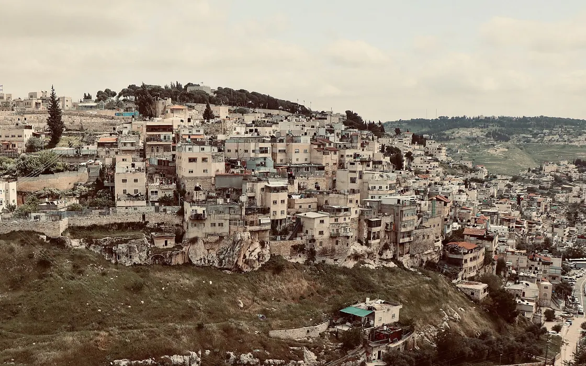

JerusalemHeritage
Jerusalem Governorate says tunnelling under Silwan is cracking homes and rewriting the area's history
The Palestinian Jerusalem Governorate says excavations beneath Wadi Hilweh have caused cracks and collapses and serve a selective narrative.

Excavations and tunnel construction are continuing beneath Silwan, the Palestinian neighbourhood just south of the Old City walls, and are putting homes at risk, the Palestinian Authority's Jerusalem Governorate said in a statement on 25 October. It singled out the Wadi Hilweh area, where Israeli authorities and settler organisations have dug for years under and between houses, and where an archaeological park run by a settler group draws large numbers of visitors.
The governorate said reports have documented cracks, partial collapses and structural damage in houses above the excavation sites. It framed the issue as one of safety and of residents' ability to stay in their homes, rather than of heritage alone. The statement did not give a figure for the number of buildings affected, and the claims could not be checked independently.
Its second complaint concerns method. The governorate said the bodies directing the digs choose where to excavate in order to support a particular historical narrative, concentrating on layers associated with the 10th century BCE while giving little attention to other periods that reflect the succession of civilisations in Jerusalem. Finds are tied to biblical accounts and sites are given biblical names, it said.
In the governorate's words, that turns archaeology from a scientific effort to understand the city's past across different eras into a tool for advancing a political narrative and justifying the takeover of land. The WAFA report that carried the statement did not include a response from the Israeli authorities or from the organisations that run the excavations, and none was available at the time of writing.
The works are spread across what planners call the Holy Basin, the area between the Old City and the Mount of Olives. The governorate listed the neighbourhoods of Silwan, Wadi Hilweh, al-Bustan and Wadi al-Rababa and said the projects reach north towards Sheikh Jarrah. Several of them, al-Bustan in particular, have also seen Palestinian homes demolished in recent weeks, the governorate says.
Above ground, the same streets saw two demolitions in the days after the statement. On 28 October a resident of Silwan's Ein al-Lawza area was made to demolish his own house, and on 4 November bulldozers destroyed an 80-square-metre house in al-Bustan that had stood for 25 years, damaging roads and uprooting trees to reach it, the governorate said. Its owner, Suleiman Abu Subaih, lived there with his wife.
On the record
Reported from the sources above, in our own words.